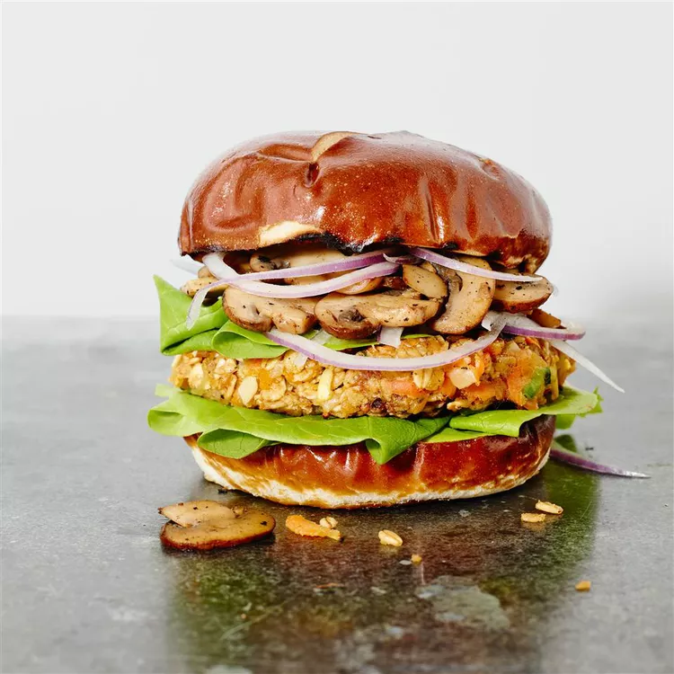

Burger

Description
Burgers that taste like hamburgers, but without meat! You can replace the Cheddar cheese with Monterey Jack or any other cheese you like. If you prefer, you may use a 1.4 ounce packet of brown broth in place of the soy sauce.
Ingredients
- 2 teaspoon olive oil
- 1 small onion, grated
- 2 cloves crushed garlic
- 2 carrots. shredded
- 1 small summer squash, shredded
- 1 small zucchini, shredded
- 1 ½ cups rolled oats
- ¼ cup shredded Cheddar cheese
- 1 egg, beaten
- 1 tablespoon soy sauce
- 1 ½ cups all-purpose flour
Directions
- Step 1
Heat the olive oil in a skillet over low heat, and cook the onion and garlic for about 5 minutes, until tender. Mix in the carrots, squash, and zucchini. Continue to cook and stir for 2 minutes. Remove pan from heat, and mix in oats, cheese, and egg. Stir in soy sauce, transfer the mixture to a bowl, and refrigerate 1 hour
- Step 2
Preheat the grill for high heat.
- Step 3
Place the flour on a large plate. Form the vegetable mixture into eight 3 inch round patties. Drop each patty into the flour, lightly coating both sides.
- Step 4
Oil the grill grate, and grill patties 5 minutes on each side, or until heated through and nicely browned